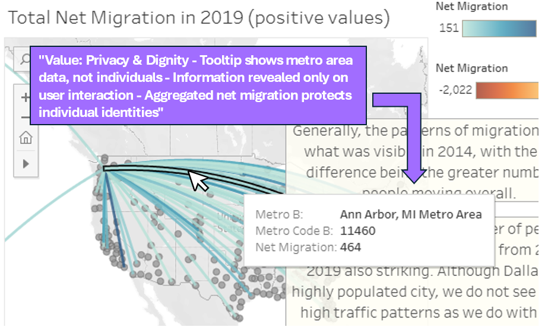

Problem Statement & Stakeholders
The Problem
Migration data visualization often fails to adequately represent the human experiences and ethical complexities behind the numbers. Existing visualizations can inadvertently dehumanize migrants by reducing complex human stories to data points, or they may prioritize certain narratives (often state-centric or security-focused) while marginalizing others. There is a need for migration visualizations that balance transparency and informed public discourse with dignity, privacy, and accurate representation of all stakeholders involved.
Stakeholders & Their Values
Migrants & Refugees
People who are directly represented in the data.
Dignity
Privacy
Autonomy
Safety
Policymakers
Government officials making decisions based on migration data.
Accuracy
Comprehensiveness
Security
Researchers & Journalists
Professionals who analyze and communicate migration patterns.
Transparency
Accuracy
Accessibility
Humanitarian Organizations
NGOs and aid organizations supporting migrants.
Justice
Welfare
Advocacy
Host Communities
Local populations in destination regions.
Information
Community wellbeing
General Public
Citizens seeking to understand global migration patterns.
Education
Empathy
Informed citizenship
Key Value Tensions
- Transparency vs. Privacy: Making data publicly accessible while protecting vulnerable individuals
- Comprehensiveness vs. Safety: Showing detailed patterns while not enabling targeting or discrimination
- Objectivity vs. Advocacy: Presenting neutral data while acknowledging humanitarian concerns
- Simplicity vs. Complexity: Making data accessible to general audiences while maintaining nuance
Approach: The Tripartite Methodology
Value Sensitive Design employs a tripartite methodology that integrates three types of investigation: conceptual, empirical, and technical. These investigations are conducted iteratively, with insights from each informing the others throughout the design process.
Conceptual Investigation
Philosophical and theoretical analysis of values and their relationships.
- Defined key values: dignity, privacy, transparency, justice
- Analyzed ethical frameworks for representing vulnerable populations
- Examined existing literature on data visualization ethics
- Identified value tensions between stakeholder groups
Empirical Investigation
Understanding how people actually perceive and interact with technology.
- Analyzed existing migration visualizations and their implicit values
- Reviewed data sources for completeness and bias
- Considered how different audiences might interpret visualizations
- Examined potential misuse scenarios
Technical Investigation
Exploring how design and technical mechanisms support or hinder values.
- Selected Tableau for interactive visualization capabilities
- Designed aggregation strategies to protect individual privacy
- Implemented thoughtful color schemes and labels
- Created interaction patterns that encourage contextual understanding
In this project, I primarily engaged in conceptual and technical investigations, with empirical investigation through secondary research. The conceptual work helped identify the ethical landscape, while technical investigation translated those insights into specific design choices. A more comprehensive project would include primary empirical research through interviews with migrants, policymakers, and other stakeholders.
Value Sensitive Design Methods
Method 1: Stakeholder Analysis (Direct & Indirect)
Purpose: Systematically identify all parties affected by the technology, both directly and indirectly.
Application: I mapped six key stakeholder groups (see above), distinguishing between direct stakeholders (migrants themselves, researchers using the data) and indirect stakeholders (host communities, general public who form opinions based on the visualization). This helped ensure the design considered impacts beyond the immediate users.
Insight: Realized that the general public as indirect stakeholders could misinterpret data to support xenophobic narratives, which informed decisions about contextualization and framing.
Method 2: Value Dams and Flows
Purpose: Identify where technology blocks (dams) or enables (flows) specific values.
Application: I analyzed design choices for their value implications:
- Value Flow - Privacy: Aggregating data at country/region level rather than individual level protects migrant privacy
- Value Flow - Transparency: Interactive filtering allows researchers to explore data from multiple angles
- Value Dam - Individual Stories: Aggregation necessarily removes individual narratives and experiences
- Value Dam - Real-time Updates: Static visualization doesn't reflect current situations or emerging crises
Insight: Recognized that protecting privacy creates a trade-off with representing individual dignity and stories, leading to considerations for future work.
Method 3: Value Scenarios
Purpose: Create narratives that explore how different stakeholders might interact with the technology in value-laden situations.
Application: Developed three scenarios:
- The Informed Citizen: A teacher uses the visualization in a social studies class to help students understand global migration patterns with empathy and context.
- The Journalist: A reporter uses the data to write a balanced article about migration trends, citing specific patterns while avoiding sensationalism.
- The Misuse Case: A politician cherry-picks data from the visualization to support anti-immigration rhetoric, removing context about why people migrate.
Insight: The misuse scenario highlighted the importance of embedded context, clear labeling, and potentially adding explanatory text about migration causes and human rights considerations.
Design & Visualizations
Tableau Dashboard
The migration mapping dashboard visualizes global migration patterns through interactive data exploration, allowing users to filter by region, time period, and migration type.
Key Design Decision: Data Aggregation Strategy
Value Consideration: Privacy & Dignity
One of the most critical design decisions was the level of data aggregation. To protect the privacy and safety of migrants while still allowing for meaningful pattern analysis, data is presented at the country or regional level, never showing individual migration paths or personal information.

Design Choice Rationale: This annotated view highlights how aggregation at the country level supports the values of privacy and dignity for migrants while maintaining analytical utility for researchers and policymakers. The trade-off is that individual stories and experiences are not visible, which required careful consideration of competing values.
Takeaways & Reflections
What Worked Well
- Privacy Protection: The aggregation strategy protected individual migrants while enabling meaningful analysis
- Multiple Perspectives: Stakeholder analysis helped identify diverse needs and values that might have been overlooked
- Conscious Design Choices: VSD framework made unspoken value decisions more explicit and justifiable
Limitations
- Limited Empirical Investigation: Did not conduct primary research with migrants or other stakeholders to validate design decisions
- Data Source Constraints: Relied on existing datasets which may have their own biases and gaps in representing undocumented migration
- Loss of Individual Narratives: Aggregation, while protecting privacy, removes the human stories and lived experiences behind the data
- Potential for Misuse: Cannot fully prevent data from being used out of context to support harmful narratives
Future Work
- Participatory Design: Conduct co-design sessions with migrants and refugee advocacy organizations to ensure their values and perspectives are centered
- Complementary Qualitative Data: Integrate anonymized personal stories or quotes alongside quantitative data to restore human dimension
- Enhanced Accessibility: Implement WCAG accessibility standards, including screen reader compatibility and alternative text
- Misuse Prevention: Add prominent contextual information, citations of migration causes, and explicit ethical guidelines for data use
Key Learnings
This project reinforced that data visualization is never neutral. Every design choice, from color selection to aggregation level to what data to include or exclude, embodies value judgments that affect how people understand complex social issues. The VSD framework highlighted that there are often no perfect solutions, only thoughtful trade-offs between competing values.